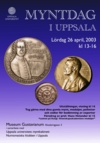
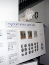
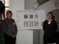
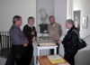
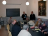
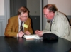
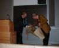
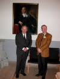

Program
Mötesreferat
Bli medlem
Historik
Stadgar
Samla mynt
Jubileumsbok
Jubileumsbok 2009
Jubileumsbok 2019
Småskrifter
Auktionskatalog
Länkar
Kontakt
Curt Ekström
Lördagen den 26 april 2003 anordnades för andra året i rad "Myntdag i Uppsala" på Museum Gustavianum. Myntdagen arrangerades i samarbete med Uppsala universitets myntkabinett och Numismatiska klubben i Uppsala. Ett stort antal besökare kom till Museum Gustavianum, lockade av det stora och varierande utbudet med anknytning till myntsamlande.
En populär programpunkt var expertbedömningen av besökarnas medförda mynt, medaljer, polletter och sedlar. Köerna var stundtals långa till denna myntens "antikrunda". Besökarna var tacksamma för de gjorda bedömningarna och värderingarna, också i de fall de medförda mynten var av enklare typ och av ringa värde. Även dessa mynt kan ha en intressant historia att berätta. Ett plåtmynt från Karl XII:s tid gav upphov till en livlig debatt - tyvärr var Numismatiska klubbens plåtmyntsspecialist Bertel Tingström inte närvarande för att reda ut begreppen.
Anders Frösell och Kjell Holmberg från Numismatiska klubben presenterade en populär och överskådlig utställning på temat "Mynten från Arns tid". Intresset för medeltida historia har blommat upp, mycket tack vare Jan Guillous romanserie om tempelriddaren Arn Magnusson. Det är många som åker till Västergötland för att i Arns fotspår besöka de gamla kyrkorna, klostren och slagfälten. Även intresset för mynt från denna tid har ökat - mynt är i princip de enda medeltida föremål som finns tillgängliga för samlare. Kjell Holmbergs sammanfattning av utställningen kan nås genom att klicka på "Mynten från Arns tid".
Uppsala universitets myntkabinett har en omfattande myntsamling, ur vilken en del av den antika samlingen är utställd på Museum Gustavianum. Myntkabinettets föreståndare Harald Nilsson presenterade utställningen med de antika grekiska och romerska mynten. Dessa mynt ger prov på en enastående konstnärlighet och en intressant historia.
Professorn i latin vid Uppsala universitet, Hans Helander, gav ett populärt föredrag om "Latinet på Kungliga Vetenskapsakademiens medaljer". Inskriptionerna på äldre personmedaljer ges ofta av sentenser ur klassiska latinska verk, medan mer sentida inskriptioner är direkta översättningar av vederbörandes vetenskapliga bedrifter. Det är intressant att notera att det på 1700-talet var naturvetare, som t.ex. Linné och Celsius, som vidhöll det logiska latinet för sina vetenskapliga skrifter, medan humanisterna var mer benägna att överge det för andra språk.
Sammanfattningsvis var denna andra "Myntdag i Uppsala" en stor succé, besöksantalet var stort och ett flertal nya medlemmar värvades till Numismatiska klubben. Mynt har så mycket att berätta och det finns så många aspekter på myntsamlande - myntdagen fyller ett berättigat behov. Vi räknar med att återkomma med "Myntdag i Uppsala" under kommande år.
Bilder:
Klicka för större versioner

{kind=link}
Myntdagens affisch.

{kind=link}
Mynten från Arns tid - utställningsaffisch.

{kind=link}
Utställarna Anders Frösell och Kjell Holmberg framför utställningsaffischen.

{kind=link}
Anders Frösell, Kjell Holmberg och Sven-Erik Olsson från Numismatiska klubben, tillsammans med en besökare vid montern med mynt från Arns tid.

{kind=link}
Myntdagens "antikrunda" - bestämning och värdering av mynt, medaljer, polletter och sedlar.

{kind=link}
Harald Nilsson bedömer ett antikt mynt åt Karl-Evert Lindgren.

{kind=link}
Efter föredraget om "Latinet på Kungliga Vetenskapsakademiens medaljer" avtackas professor Hans Helander av föreståndaren för Uppsala universitets myntkabinett, Harald Nilsson, med en blomma och ett exemplar av Numismatiska klubbens jubileumsbok "Samlad Glädje".

{kind=link}
Hans Helander och Harald Nilsson framför porträttet av en av Uppsala universitets giganter, Olof Rudbeck d.ä. (1630-1702).